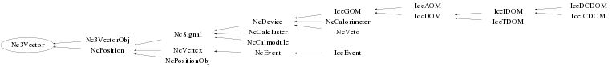

class Nc3Vector
Class Nc3Vector Handling of 3-vectors in various reference frames. This class is meant to serve as a base class for NCFS (derived) objects that have 3-dimensional vector characteristics. Error propagation is performed automatically. Note : Vectors (v), Errors (e), reference frames (f) and angular units (u) are specified via SetVector(Float_t* v,TString f,TString u) SetErrors(Float_t* e,TString f,TString u) under the following conventions : f="car" ==> v in Cartesian coordinates (x,y,z) f="sph" ==> v in Spherical coordinates (r,theta,phi) f="cyl" ==> v in Cylindrical coordinates (rho,phi,z) u="rad" ==> angles in radians u="deg" ==> angles in degrees The "f" and "u" facilities only serve as a convenient user interface. Internally the actual storage of the various components is performed in a unique way. This allows setting/retrieval of vector components in a user selected frame/unit convention at any time. Example : Nc3Vector a; Float_t v[3]={-1,25,7}; Float_t e[3]={0.03,0.5,0.21}; a.SetVector(v,"car"); a.SetErrors(e,"car"); a.Data(); Float_t vec[3]; Float_t err[3]; a.GetVector(vec,"sph","deg"); a.GetErrors(vec,"sph","deg"); Nc3Vector b; Float_t v2[3]={6,-18,33}; Float_t e2[3]={0.19,0.45,0.93}; b.SetVector(v2,"car"); b.SetErrors(e2,"car"); Float_t dotpro=a.Dot(b); Float_t doterror=a.GetResultError(); Nc3Vector c=a.Cross(b); c.Data("sph"); c.GetVector(vec,"cyl"); c.GetErrors(err,"cyl"); Float_t norm=c.GetNorm(); Float_t normerror=c.GetResultError(); c=a+b; c=a-b; c=a*5; --- Author: Nick van Eijndhoven 30-mar-1999 Utrecht University - Modified: NvE $Date: 2010-03-19 11:10:02 +0100 (Fri, 19 Mar 2010) $ NCFS
Function Members (Methods)
public:
| Nc3Vector() | |
| Nc3Vector(const Nc3Vector& v) | |
| virtual | ~Nc3Vector() |
| static TClass* | Class() |
| Nc3Vector | Cross(Nc3Vector& q) const |
| virtual void | Data(TString f = "car", TString u = "rad") const |
| Double_t | Dot(Nc3Vector& q) |
| void | GetErrors(Double_t* e, TString f, TString u = "rad") const |
| void | GetErrors(Float_t* e, TString f, TString u = "rad") const |
| Double_t | GetNorm() |
| virtual Double_t | GetOpeningAngle(Nc3Vector& q, TString u = "rad") |
| Nc3Vector | GetPrimed(TRotMatrix* m) const |
| Double_t | GetPseudoRapidity() |
| Double_t | GetResultError() const |
| Nc3Vector | GetUnprimed(TRotMatrix* m) const |
| Nc3Vector | GetVecLong() const |
| void | GetVector(Double_t* v, TString f, TString u = "rad") const |
| void | GetVector(Float_t* v, TString f, TString u = "rad") const |
| Nc3Vector | GetVecTrans() const |
| Double_t | GetX(Int_t i, TString f, TString u = "rad") |
| Int_t | HasErrors() const |
| Int_t | HasVector() const |
| virtual TClass* | IsA() const |
| virtual void | Load(Nc3Vector& q) |
| Nc3Vector | operator*(Double_t s) const |
| Nc3Vector& | operator*=(Double_t s) |
| Nc3Vector | operator+(Nc3Vector& q) const |
| Nc3Vector& | operator+=(Nc3Vector& q) |
| Nc3Vector | operator-(Nc3Vector& q) const |
| Nc3Vector& | operator-=(Nc3Vector& q) |
| Nc3Vector | operator/(Double_t s) const |
| Nc3Vector& | operator/=(Double_t s) |
| Nc3Vector& | operator=(const Nc3Vector& q) |
| void | SetErrors(Double_t* e, TString f, TString u = "rad") |
| void | SetErrors(Float_t* e, TString f, TString u = "rad") |
| void | SetErrors(Double_t e1, Double_t e2, Double_t e3, TString f, TString u = "rad") |
| void | SetVector(Double_t* v, TString f, TString u = "rad") |
| void | SetVector(Float_t* v, TString f, TString u = "rad") |
| void | SetVector(Double_t v1, Double_t v2, Double_t v3, TString f, TString u = "rad") |
| virtual void | SetZero() |
| virtual void | ShowMembers(TMemberInspector&) |
| virtual void | Streamer(TBuffer&) |
| void | StreamerNVirtual(TBuffer& ClassDef_StreamerNVirtual_b) |
Data Members
protected:
| Double32_t | fDresult | ! Error on scalar result (e.g. norm or dotproduct) |
| Int_t | fNv | The number of components of the array fV |
| Double32_t* | fV | [fNv] Vector in spherical (and errors in Cartesian) coordinates |
Class Charts
{kind=link}
{kind=link}
{kind=link}
{kind=link}

Function documentation
Nc3Vector()
Creation of an Nc3Vector object and initialisation of parameters All attributes initialised to 0
void SetVector(Double_t* v, TString f, TString u = "rad")
Store vector according to reference frame f. Only vector components will be stored, no errors. The string argument "u" allows to choose between different angular units in case e.g. a spherical frame is selected. u = "rad" : angles provided in radians "deg" : angles provided in degrees The default is u="rad".
void SetVector(Double_t v1, Double_t v2, Double_t v3, TString f, TString u = "rad")
Store vector according to reference frame f. Only vector components will be stored, no errors. The string argument "u" allows to choose between different angular units in case e.g. a spherical frame is selected. u = "rad" : angles provided in radians "deg" : angles provided in degrees The default is u="rad".
void GetVector(Double_t* v, TString f, TString u = "rad") const
Provide vector according to reference frame f The string argument "u" allows to choose between different angular units in case e.g. a spherical frame is selected. u = "rad" : angles provided in radians "deg" : angles provided in degrees The default is u="rad".
void SetVector(Float_t* v, TString f, TString u = "rad")
Store vector according to reference frame f. Only vector components will be stored, no errors. The string argument "u" allows to choose between different angular units in case e.g. a spherical frame is selected. u = "rad" : angles provided in radians "deg" : angles provided in degrees The default is u="rad".
void GetVector(Float_t* v, TString f, TString u = "rad") const
Provide vector according to reference frame f The string argument "u" allows to choose between different angular units in case e.g. a spherical frame is selected. u = "rad" : angles provided in radians "deg" : angles provided in degrees The default is u="rad".
void SetErrors(Double_t* e, TString f, TString u = "rad")
Store errors according to reference frame f.
Note : The errors can only be set after the vector components have
been specified via the SetVector memberfunction.
The string argument "u" allows to choose between different angular units
in case e.g. a spherical frame is selected.
u = "rad" : angles provided in radians
"deg" : angles provided in degrees
The default is u="rad".
The error on scalar results is reset to 0.
void SetErrors(Double_t e1, Double_t e2, Double_t e3, TString f, TString u = "rad")
Store errors according to reference frame f.
Note : The errors can only be set after the vector components have
been specified via the SetVector memberfunction.
The string argument "u" allows to choose between different angular units
in case e.g. a spherical frame is selected.
u = "rad" : angles provided in radians
"deg" : angles provided in degrees
The default is u="rad".
The error on scalar results is reset to 0
void GetErrors(Double_t* e, TString f, TString u = "rad") const
Provide errors according to reference frame f. The string argument "u" allows to choose between different angular units in case e.g. a spherical frame is selected. u = "rad" : angles provided in radians "deg" : angles provided in degrees The default is u="rad".
void SetErrors(Float_t* e, TString f, TString u = "rad")
Store errors according to reference frame f.
Note : The errors can only be set after the vector components have
been specified via the SetVector memberfunction.
The string argument "u" allows to choose between different angular units
in case e.g. a spherical frame is selected.
u = "rad" : angles provided in radians
"deg" : angles provided in degrees
The default is u="rad".
The error on scalar results is reset to 0
void GetErrors(Float_t* e, TString f, TString u = "rad") const
Provide errors according to reference frame f The string argument "u" allows to choose between different angular units in case e.g. a spherical frame is selected. u = "rad" : angles provided in radians "deg" : angles provided in degrees The default is u="rad".
void Data(TString f = "car", TString u = "rad") const
Print vector components according to reference frame f The string argument "u" allows to choose between different angular units in case e.g. a spherical frame is selected. u = "rad" : angles provided in radians "deg" : angles provided in degrees The defaults are f="car" and u="rad".
Int_t HasVector() const
Check whether the vector components have been set. In case the vector components have been set, the value 1 is returned. Otherwise, the value 0 is returned.
Int_t HasErrors() const
Check whether the errors on the vector components have been set. In case the errors have been set, the value 1 is returned. Otherwise, the value 0 is returned.
Double_t GetNorm()
Provide the norm of the current vector The error on the scalar result (norm) is updated accordingly
Double_t GetPseudoRapidity()
Provide the pseudo-rapidity w.r.t. the z-axis. In other words : eta=-log(tan(theta/2)) The error on the scalar result (pseudo-rap.) is updated accordingly
Double_t Dot(Nc3Vector& q)
Provide the dot product of the current vector with vector q The error on the scalar result (dotproduct) is updated accordingly
Double_t GetResultError() const
Nc3Vector Cross(Nc3Vector& q) const
Provide the cross product of the current vector with vector q Error propagation is performed automatically
Nc3Vector operator+(Nc3Vector& q) const
Add vector q to the current vector Error propagation is performed automatically
Nc3Vector operator-(Nc3Vector& q) const
Subtract vector q from the current vector Error propagation is performed automatically
Nc3Vector operator*(Double_t s) const
Multiply the current vector with a scalar s. Error propagation is performed automatically.
Nc3Vector operator/(Double_t s) const
Divide the current vector by a scalar s Error propagation is performed automatically
Nc3Vector& operator+=(Nc3Vector& q)
Add vector q to the current vector Error propagation is performed automatically
Nc3Vector& operator-=(Nc3Vector& q)
Subtract vector q from the current vector Error propagation is performed automatically
Nc3Vector& operator*=(Double_t s)
Multiply the current vector with a scalar s Error propagation is performed automatically
Nc3Vector& operator/=(Double_t s)
Divide the current vector by a scalar s Error propagation is performed automatically
Nc3Vector GetVecTrans() const
Provide the transverse vector w.r.t. z-axis. Error propagation is performed automatically
Nc3Vector GetVecLong() const
Provide the longitudinal vector w.r.t. z-axis. Error propagation is performed automatically
Nc3Vector GetPrimed(TRotMatrix* m) const
Provide vector components (and errors) in a rotated frame. The orientation of the rotated frame is described by the TRotMatrix input argument.
Nc3Vector GetUnprimed(TRotMatrix* m) const
Provide original vector components (and errors) from the rotated ones. The orientation of the rotated frame is described by the TRotMatrix input argument. So, this is the inverse of the GetPrimed() memberfunction. This memberfunction makes use of the fact that the inverse of a certain TRotMatrix is given by its transposed matrix.
Double_t GetX(Int_t i, TString f, TString u = "rad")
Provide i-th vector component according to reference frame f. The string argument "u" allows to choose between different angular units in case e.g. a spherical frame is selected. u = "rad" : angles provided in radians "deg" : angles provided in degrees The default is u="rad". The vector components are addressed via the generic x1,x2,x3 notation. So, i=1 denotes the first vector component. The error on the selected component can be obtained via the usual GetResultError() facility.
Double_t GetOpeningAngle(Nc3Vector& q, TString u = "rad")
Provide the opening angle with vector q. The string argument "u" allows to choose between different output units. u = "rad" : opening angle provided in radians "deg" : opening angle provided in degrees The default is u="rad".